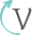

<ion-tabs #tabs (ionTabsDidChange)="setCurrentTab()">
  <ion-tab-bar slot="bottom">

    <ion-tab-button tab="home-page">
      
    </ion-tab-button>

    <ion-tab-button tab="reviews">
      
    </ion-tab-button>

    <ion-tab-button tab="gallery">
      
    </ion-tab-button>

    <ion-tab-button tab="places">
      
    </ion-tab-button>
  </ion-tab-bar>
</ion-tabs>
